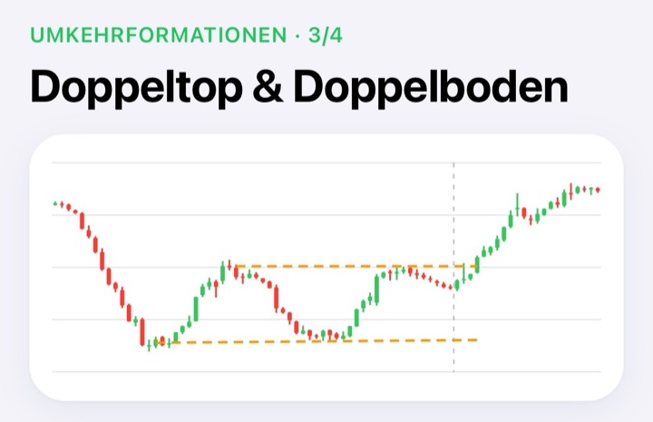
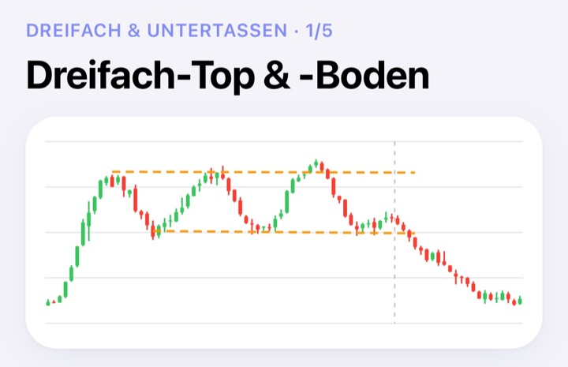
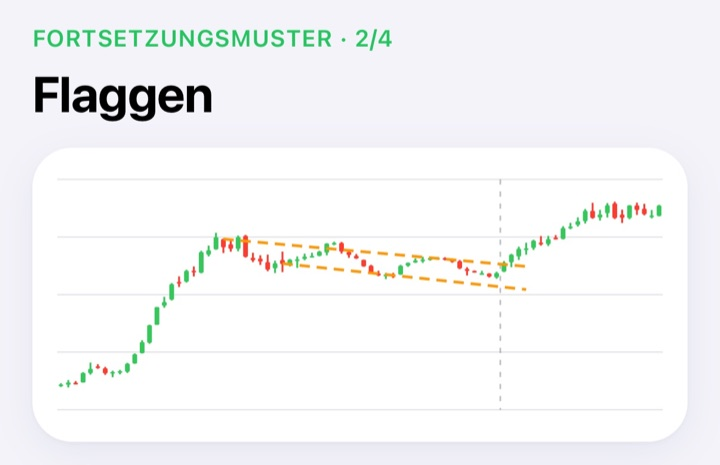
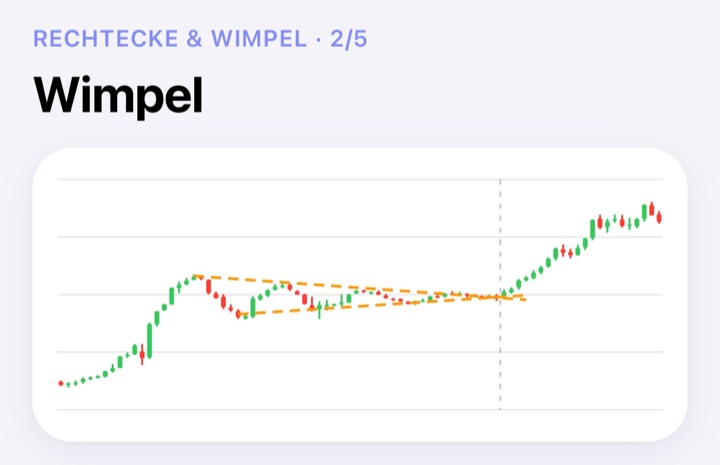
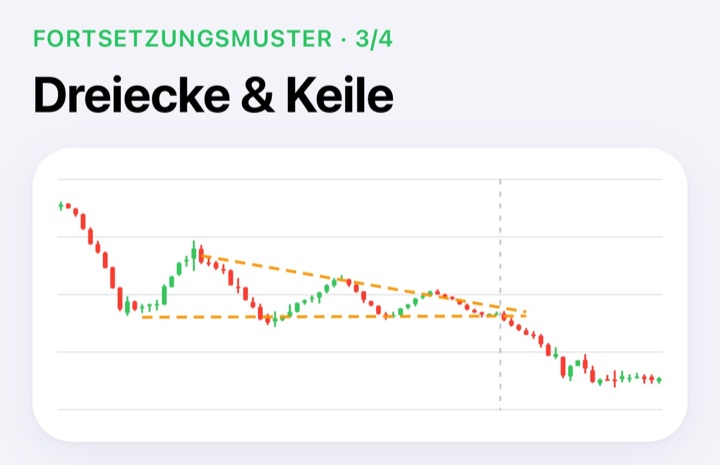
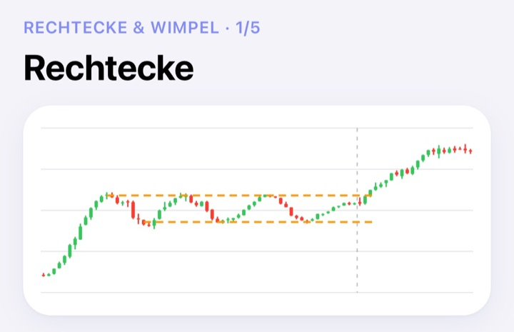

Charttechnik
Chartmuster erkennen: Die 7 wichtigsten Formationen einfach erklärt
Wer Charts liest, sieht immer wieder dieselben Formen. Diese sieben Chartmuster kennt jeder Profi, und so erkennst du, ob sie wirklich gelten.
Chartmuster sind wiederkehrende Formen im Kursverlauf. Sie zeigen, wie Käufer und Verkäufer miteinander ringen: ob ein Trend Kraft verliert oder nur Luft holt. Man unterscheidet Umkehrformationen, die eine Wende ankündigen können, und Fortsetzungsmuster, nach denen der Trend häufig weiterläuft. Kürzere Signale aus nur einer bis drei Kerzen erklärt der Artikel Kerzenmuster.
Die 7 Muster im Überblick
| Muster | Art | Typische Bedeutung |
|---|---|---|
| Schulter-Kopf-Schulter | Umkehr | Ende eines Aufwärtstrends |
| Doppeltop und Doppelboden | Umkehr | Wende nach zwei gescheiterten Anläufen |
| Dreifach-Top und -Boden | Umkehr | Wende nach drei gescheiterten Anläufen |
| Flagge | Fortsetzung | kurze Pause in einem steilen Trend |
| Wimpel | Fortsetzung | kurze, spitz zulaufende Pause |
| Dreiecke und Keile | meist Fortsetzung | Ausbruch nach einer Verengung |
| Rechteck | meist Fortsetzung | Seitwärtsphase mit klaren Grenzen |
1. Schulter-Kopf-Schulter

Drei Hochs, das mittlere am höchsten: links eine Schulter, in der Mitte der Kopf, rechts die zweite Schulter. Die Linie durch die beiden Tiefs dazwischen heißt Nackenlinie. Erst wenn der Kurs sie nach unten durchbricht, gilt die Umkehr als bestätigt. Vorher ist es nur eine mögliche Formation.
Ein häufig genutztes Kursziel ist der Abstand vom Kopf zur Nackenlinie, vom Bruchpunkt aus nach unten abgetragen. Kopf bei 120 €, Nackenlinie bei 100 € ergibt ein rechnerisches Ziel von 80 €. Am Ende eines Abwärtstrends gibt es das Muster spiegelverkehrt als umgekehrte Schulter-Kopf-Schulter. Ausführlich mit Stop und Chance-Risiko-Verhältnis: Schulter-Kopf-Schulter-Formation.
2. Doppeltop und Doppelboden

Das Doppeltop sieht aus wie ein M: Der Kurs scheitert zweimal am selben Hoch. Der Doppelboden ist ein W: Zweimal hält dieselbe Unterstützung. Bestätigt ist das Muster erst, wenn beim M das Zwischentief und beim W das Zwischenhoch durchbrochen wird. Zwei Hochs auf ähnlicher Höhe allein sind noch kein Doppeltop.
3. Dreifach-Top und Dreifach-Boden

Das Prinzip des Doppeltops, nur mit drei Anläufen. Je öfter eine Zone hält, desto mehr Marktteilnehmer achten auf sie. Beim Dreifach-Top bestätigt der Bruch der Zwischentiefs die Umkehr. Das Muster ist seltener als das Doppeltop und braucht meist länger, bis es fertig ist.
4. Flagge

Eine Flagge beginnt mit einem steilen Anstieg, dem Fahnenmast. Danach läuft der Kurs kurz in einem schmalen, leicht gegenläufigen Kanal: der Flagge. Bricht er in Richtung des Trends aus, geht die Bewegung häufig weiter. Bärenflaggen funktionieren spiegelverkehrt im Abwärtstrend.
Ein Qualitätsmerkmal ist das Volumen: hoch im Mast, niedrig in der Flagge, beim Ausbruch wieder deutlich höher. Als grobes Kursziel nutzen viele die Länge des Mastes, vom Ausbruch aus abgetragen.
5. Wimpel

Der Wimpel ist der enge Verwandte der Flagge. Auch hier gibt es einen Mast, doch die Pause danach läuft spitz zusammen, statt parallel zu verlaufen. Sie dauert meist nur kurz, und auch der Wimpel gilt als Fortsetzungsmuster.
6. Dreiecke und Keile

Dreiecke entstehen, wenn die Schwankungen enger werden:
- Aufsteigendes Dreieck: flacher Widerstand, steigende Tiefs, meist bullisch.
- Absteigendes Dreieck: flache Unterstützung, sinkende Hochs, meist bärisch.
- Symmetrisches Dreieck: Beide Linien laufen aufeinander zu. Der Ausbruch erfolgt häufig in Richtung des Vortrends.
Keile sehen ähnlich aus, doch beide Linien zeigen in dieselbe Richtung. Ein steigender Keil verrät oft nachlassende Kraft und endet häufig mit einem Bruch nach unten, ein fallender Keil eher umgekehrt.
7. Rechteck

Ein Rechteck ist eine Seitwärtsphase mit klarer Ober- und Unterkante. Der Kurs pendelt zwischen Widerstand und Unterstützung, bis eine Seite nachgibt. In einem laufenden Trend ist das Rechteck meist eine Fortsetzungsformation, der Ausbruch erfolgt also häufig in Trendrichtung.
Chartmuster erkennen in 4 Schritten
- Den Trend davor bestimmen. Umkehrformationen brauchen einen Trend, der kippen kann. Fortsetzungsmuster entstehen mitten im Trend.
- Die Zonen einzeichnen. Fast jedes Muster besteht aus Unterstützungen und Widerständen: Nackenlinie, Boden, Ober- und Untergrenze.
- Auf die Bestätigung warten. Ein Muster gilt erst, wenn der Kurs die entscheidende Linie mit einem Schlusskurs durchbricht, am besten mit steigendem Volumen.
- Kursziel und Stop festlegen, bevor du handelst. Lohnt sich der Trade im Verhältnis zum Risiko nicht, lässt du ihn aus.
So nutzen Profis Chartmuster
- Bestätigung abwarten: Erst der Bruch von Nackenlinie, Unterstützung oder Widerstand macht aus einer Form ein Signal.
- Volumen prüfen: Ausbrüche mit steigendem Volumen sind glaubwürdiger.
- Stop dort setzen, wo die Idee widerlegt ist: zum Beispiel knapp hinter der Ausbruchslinie.
- Chance und Risiko vorher rechnen: Ob sich ein Trade lohnt, zeigt das Chance-Risiko-Verhältnis.
- Einsatz begrenzen: Damit ein Fehlausbruch wenig kostet, regelt die Positionsgröße den Einsatz.
Ausbrüche aus Formationen beginnen oft mit einer Kurslücke. Eine solche Ausbruchslücke mit hohem Volumen gilt als starkes Zeichen.
Chartmuster üben
Muster prägen sich am besten ein, wenn du sie immer wieder in Charts suchst. In InQuestly erklären die Gratis-Lektionen „Umkehrformationen“ und „Fortsetzungsmuster“ die Muster 1, 2, 4 und 6. Dreifach-Top, Wimpel und Rechteck gehören zum Kurs „Formationen für Fortgeschrittene“ mit InQuestly Pro. Im Gratis-Trainer „Muster-Detektiv“ übst du anschließend, Formationen in Charts zu erkennen.
Häufige Fragen
Wie erkenne ich Chartmuster?
Zuerst den Trend davor bestimmen, dann die Zonen einzeichnen und auf die Bestätigung warten: Erst ein Schlusskurs jenseits der entscheidenden Linie, am besten mit höherem Volumen, macht aus einer Form ein gültiges Muster.
Was ist der Unterschied zwischen Chartmustern und Kerzenmustern?
Kerzenmuster bestehen aus einer bis drei Kerzen und zeigen die Stimmung weniger Tage. Chartmuster wie Schulter-Kopf-Schulter entstehen über Wochen. Am stärksten sind Signale, wenn beides zusammenpasst.
Gibt es eine App, um Chartmuster zu lernen?
Ja. In InQuestly erklären die Gratis-Lektionen zu Umkehr- und Fortsetzungsmustern die wichtigsten Formationen, und im Muster-Detektiv übst du, sie in Charts zu erkennen.
Welches Chartmuster ist das zuverlässigste?
Keines funktioniert immer. Muster mit klarer Bestätigung und hohem Volumen beim Ausbruch gelten als aussagekräftiger. Entscheidend ist, vorher Stop und Positionsgröße festzulegen.
Was ist der Unterschied zwischen Flagge und Wimpel?
Bei der Flagge verläuft die Pause in einem parallelen, leicht gegenläufigen Kanal. Beim Wimpel läuft sie spitz zusammen wie ein kleines Dreieck.
Funktionieren Chartmuster auch bei ETFs und Kryptowährungen?
Die Formen tauchen in allen frei gehandelten Märkten auf, weil sie das Verhalten von Käufern und Verkäufern zeigen. Wie gut sie funktionieren, hängt von Liquidität, Zeiteinheit und Marktphase ab.
Wie lerne ich Chartmuster am schnellsten?
Mit kurzen, regelmäßigen Übungen: ein Muster verstehen, dann in vielen Charts danach suchen. Wiederholung über mehrere Tage wirkt besser als eine lange Sitzung.
Dieser Artikel dient der Bildung und ist keine Anlageberatung. Beispiele sind vereinfacht und ohne Steuern dargestellt.